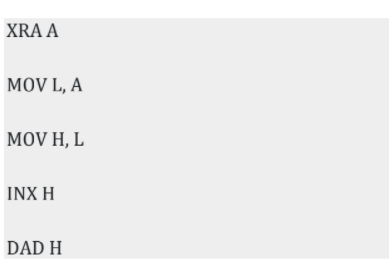
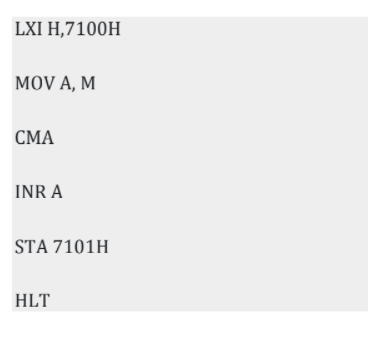

1. In a Microprocessor, the address of the new next instruction to be executed is stored in a. Stack pointer b. address latch c. Program counter d. General purpose register
2. The basic operations performed by the computer are? a. Arithmetic operation b. Logical Operation c. Storage and relative d. All the above
3. Which one is used to implement the hardware interrupts (RST 7.5, RST 6.5, RST 5.5) by setting various bits to form masks or generate output data via the Serial Output Data (SOD) line? a. Read Interrupt Mask b. Set Interrupt mask c. Enable Interrupt d. Disable Interrupt
4. The difference between 8085 instructions RST n and PCHL is a. RST n is equivalent to a sub-routine call while PCHL is equivalent to unconditional branch. b. RST n uses direct addressing while PCHL uses register indirect addressing. c. RST n is a software interrupt while PCHL simulates a hardware interrupt d. RST n resets the processor while PCHL restarts the processor.
5. What is content of accumulator of 8085 microprocessor after the execution of XRI F0 H instruction? a. Only the upper nibble of accumulator is complemented b. Only the lower nibble is complemented c. Only the upper nibble is reset to zero d. Only the lower nibble is reset to zero
6. An I/O processor control the flow of information between a. Cache memory and I/O devices b. Main memory and I/O devices c. Two I/O devices d. Cache and main memory
7. Components that provide internal storage to the CPU are a. Registers b. Program Counters c. Controllers d. Internal Chips
8. Which of the following is used to hold running program instructions? a. Primary Storage b. Virtual Storage c. Internal Storage d. Minor Devices
9. Which of the following is non-volatile storage? a. RAM b. Primary c. Secondary d. Cache
10. An I/O processor control the flow of information between a. Cache memory and I/O devices b. Main memory and I/O devices c. Two I/O devices d. Cache and main memory
11. Ready pin of microprocessor is used a. to indicate that microprocessor is ready to receive inputs b. to indicate that microprocessor is ready to receive outputs 3.125 MHz c. to introduce wait state d. to provide direct memory access
12. What are the states of the Auxiliary Carry (AC) and Carry Flag (dCY) after executing the following 8085 programs? a. AC = 0 and CY = 0 b. AC = 1 and CY = 1 c. AC = 1 and CY = 0 d. AC = 0 and CY = 0
13. PSW (Program Status Word) register pair is made up of a. Accumulator and Flag registers b. Program Counter and Accumulator c. Accumulator and Stack Pointer d. Program Counter and Flag Register
14. Assume the accumulator contains the following value: 0100 0001. In which way the value can be read? a. It is a string of 0’s and 1’s where the 0th and the 6th bits are set to 1 while all others bits are set to 0. b. It is a number expressed in BCD format. That would make it 41. c. It is an unsigned integer expressed in binary; the equivalent number would be 65. d. All of the above
15. If the processor is executing the main program that calls a subroutine, then after executing the main program up to the CALL instruction, the control will be transferred to a. Address of main program b. Subroutine address c. Address of CALL instruction d. None of the above
16. INTR must remain active for how many T-states? a. 16.5 T-states b. 17.5 T-states c. 18.5 T-states d. 19.5 T-states
17. What are level triggering interrupts? a. INTR & TRAP b. RST 6.5 and RST 5.5 c. RST 7.5 and RST 6.5 d. None of these
18. Registers which are partially visible to users and used to hold conditional, are known as? a. PC b. Memory address registers c. General purpose registers d. Flags
19. All vectored interrupts are mapped onto a memory location called _____ and it is located in memory area 0000h -00FFH a. Interrupt Vector Table (IVT) b. Garbage c. Code Segment d. Stack Segment
20. In 8085, when the processor receives a hardware interrupt, it sends acknowledgment signal through which pin to the interrupting device? a. TRAP b. RST 7.5 c. INTA d. INTR
21. The content of the HL pair after the execution of the following instructions is
a. 0000H b. 0001H c. 0011H d. 0002H
22. What will be the value in the memory location 7101H after the execution of the following code? The data at memory location 7100 is A7H.
a. 59H b. 58H c. 5AH d. None of these
23. The interrupt control logic a. manages interrupts b. manages interrupt acknowledge signals c. accepts interrupt acknowledge signal d. all of the mentioned
24. Both the ALU and control section of CPU employ which special purpose storage location? a. Buffers b. Decoders c. Accumulators d. Registers
25. The cycle required to fetch and execute an instruction in a 8085 microprocessor is which one of the following? a. Clock cycle b. Memory cycle c. Machine cycle d. Instruction cycle
26. In 8085 microprocessors, the instruction CMP B has been executed while the content of the accumulator is less than that of register B. As a result a. Carry flag will be set but zero flag will be reset b. Carry flag will be reset but zero flag will be set c. Both carry and zero flag will be reset d. Both carry and zero flag will be set
27. Temporary registers in 8085 are a. B and C b. D and E c. H and L d. W and Z
28. The 8085 programming manual says that it takes seven T states to fetch and execute the MOV instruction. If the system clock has a frequency of 2.5 MHz, how long is an instruction Cycle? a. 2.8s b. 2.5ns c. 2.8ns d. 2.8(micro)s
29. In 8085, the DAA instruction is used for a. Direct Address Accumulator b. Double Add Accumulator c. Decimal Adjust Accumulator d. Direct Access Accumulator
30. The first microprocessor to include virtual memory in the Intel microprocessor family is a. 80286 b. 80386 c. 80486 d. Pentium